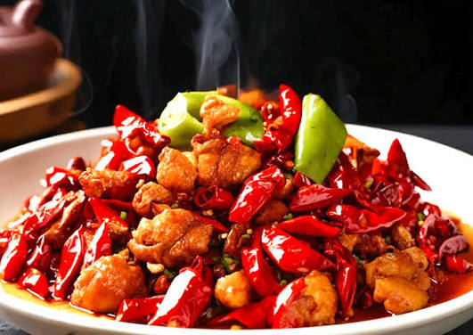

Welcome all to this website
FOOD
Food is the fundamental substance that living organisms consume to obtain nutritional support, strength, and energy to
sustain life. It stands as a vital necessity alongside clothing and shelter, acting as the fuel that drives our body's
everyday metabolic processes and physical activities. Broadly sourced from both plants and animals, food can be
categorized into major groups including grains, proteins, fruits, vegetables, and dairy. Each group delivers varying
levels of essential nutrients like carbohydrates for energy, proteins for muscle repair, healthy fats for brain
function, and vitamins and minerals to bolster the immune system. Consuming a balanced diet rich in natural,
nutrient-dense foods prevents deficiency diseases and promotes longevity, whereas overindulging in processed junk food
can lead to health complications. Beyond absolute biological survival, food also holds profound cultural significance,
bringing joy, comfort, and a sense of community when shared among family and friends.
Orange Chicken
 range Chicken is a highly popular Chinese-American dish featuring bite-sized pieces of boneless chicken that are lightly
battered, deep-fried to a crisp golden brown, and then tossed in a sweet, savory, and tangy glaze. The signature sauce
is primarily flavored with fresh orange juice or zest, soy sauce, garlic, ginger, and a hint of chili flakes for a
gentle kick of heat. Originating as a staple of takeout culture made famous by chains like Panda Express, it is
celebrated for its perfect contrast of crunchy coating and tender meat. Typically garnished with fresh green onions or
sesame seeds, it is most commonly served hot over a bed of white, brown, or fried rice alongside chow mein noodles
range Chicken is a highly popular Chinese-American dish featuring bite-sized pieces of boneless chicken that are lightly
battered, deep-fried to a crisp golden brown, and then tossed in a sweet, savory, and tangy glaze. The signature sauce
is primarily flavored with fresh orange juice or zest, soy sauce, garlic, ginger, and a hint of chili flakes for a
gentle kick of heat. Originating as a staple of takeout culture made famous by chains like Panda Express, it is
celebrated for its perfect contrast of crunchy coating and tender meat. Typically garnished with fresh green onions or
sesame seeds, it is most commonly served hot over a bed of white, brown, or fried rice alongside chow mein noodles
Laziji

Laziji is a defining masterpiece of Sichuan cuisine, celebrated for its bold, fiery, and deeply aromatic profile. The
dish consists of small, bite-sized cubes of chicken thighs that are marinated, deep-fried twice until incredibly crispy,
and then stir-fried with an overwhelming volume of vibrant dried red chilis, Sichuan peppercorns, garlic, and ginger. It
delivers the iconic málà flavor profile, which combines a throat-warming spicy heat with a unique, tongue-tingling, and
mouth-numbing sensation. Authentically, the chicken is served buried beneath a mountain of bright red peppers, turning
the meal into a playful culinary treasure hunt where diners use chopsticks to pick out the fragrant, savory nuggets of
meat from the spices.